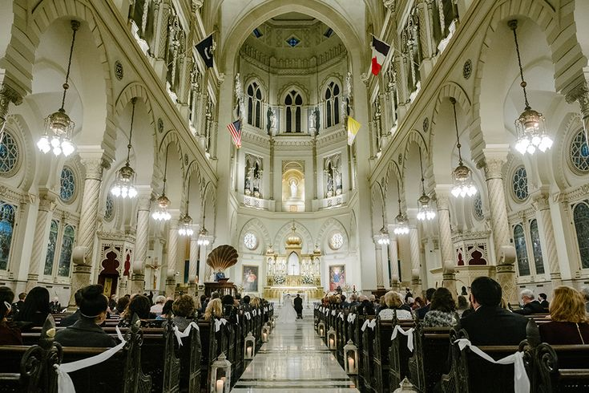
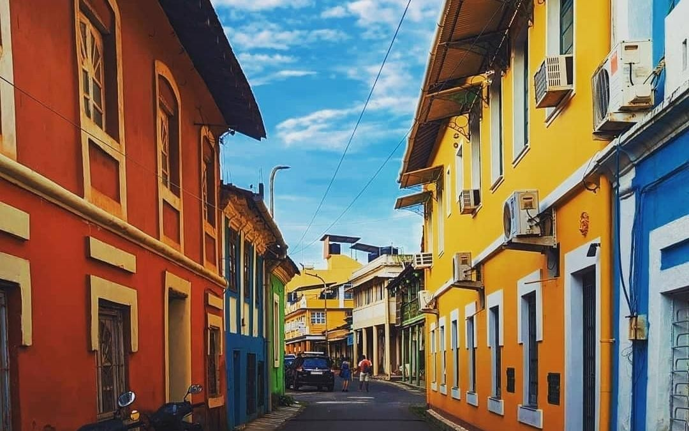
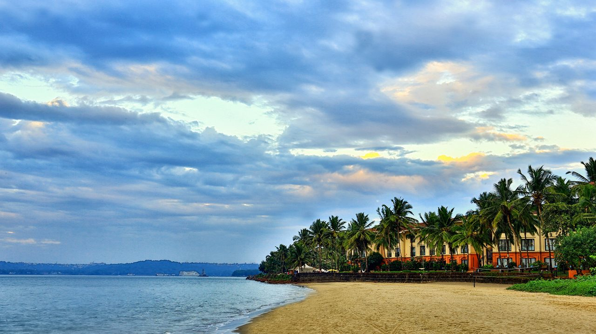
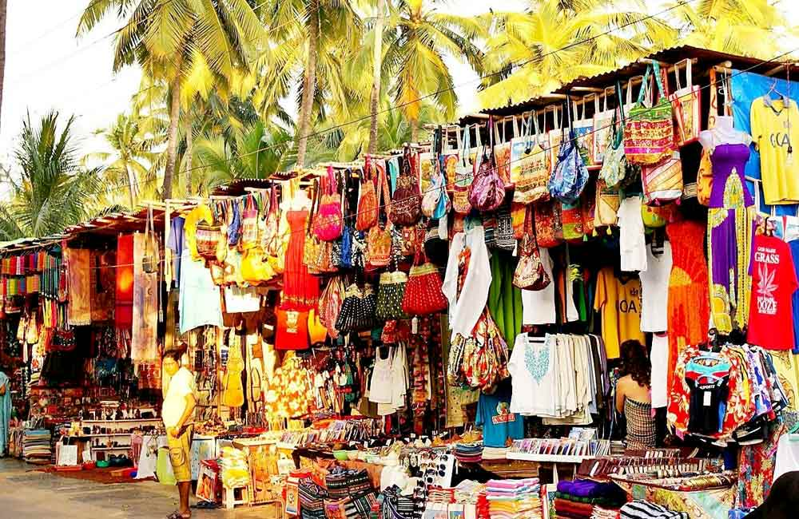
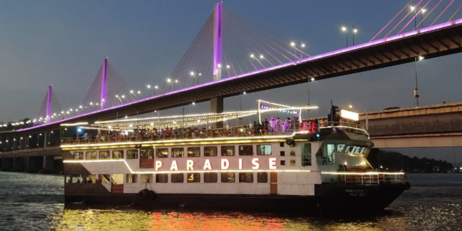

Panaji, the laid-back capital of Goa, blends Portuguese charm with modern vibrance. Its winding lanes, colonial architecture, and riverside promenades make it one of India’s most picturesque cities. From historic churches to bustling markets and lively riverfronts, Panaji offers a relaxed yet cultural experience in the heart of Goa.

An iconic whitewashed church overlooking the city square.

The colorful Latin Quarter with Portuguese-style houses and art galleries.

A golden sandy beach offering sunset views along the Arabian Sea.

Shop for spices, cashews, Goan handicrafts, and souvenirs.

Enjoy evening cruises with Goan music, dance, and food.
Relish seafood delights and traditional Goan curries.
Best Time to Visit: November to February for pleasant weather.
How to Reach: By Air - Dabolim Airport (28 km); By Train - Karmali Station (12 km); By Road - Connected via highways and buses.
Local Transport: Auto-rickshaws, taxis, and bike rentals are popular for city exploration.